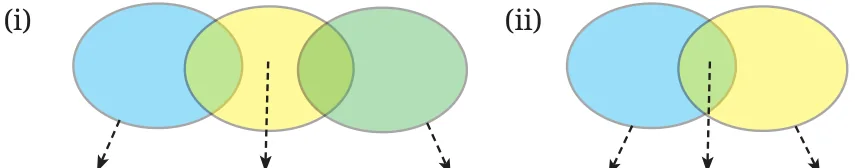
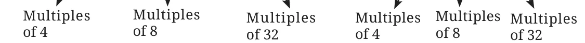
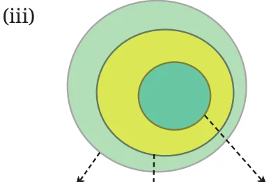
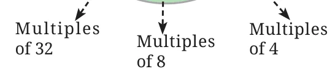
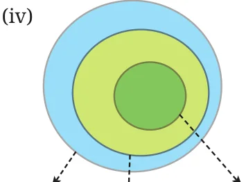
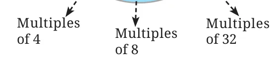

- If \(31z5\) is a multiple of 9, where \(z\) is a digit, what is the value of \(z\)? Explain why there are two answers to this problem.
- “I take a number that leaves a remainder of 8 when divided by 12. I take another number which is 4 short of a multiple of 12. Their sum will always be a multiple of 8”, claims Snehal. Examine his claim and justify your conclusion.
- When is the sum of two multiples of 3, a multiple of 6 and when is it not? Explain the different possible cases, and generalise the pattern.
- Sreelatha says, “I have a number that is divisible by 9. If I reverse its digits, it will still be divisible by 9”.
- Examine if her conjecture is true for any multiple of 9.
- Are any other digit shuffles possible such that the number formed is still a multiple of 9?
- If \(48a23b\) is a multiple of 18, list all possible pairs of values for \(a\) and \(b\).

- If \(3p7q8\) is divisible by 44, list all possible pairs of values for \(p\) and \(q\).
- Find three consecutive numbers such that the first number is a multiple of 2, the second number is a multiple of 3, and the third number is a multiple of 4. Are there more such numbers? How often do they occur?
- Write five multiples of 36 between 45,000 and 47,000. Share your approach with the class.
- The middle number in the sequence of 5 consecutive even numbers is \(5p\). Express the other four numbers in sequence in terms of \(p\).
- Write a 6-digit number that it is divisible by 15, such that when the digits are reversed, it is divisible by 6.
- Deepak claims, “There are some multiples of 11 which, when doubled, are still multiples of 11. But other multiples of 11 don’t remain multiples of 11 when doubled”. Examine if his conjecture is true; explain your conclusion.
- Determine whether the statements below are ‘Always True’, ‘Sometimes True’, or ‘Never True’. Explain your reasoning.
- The product of a multiple of 6 and a multiple of 3 is a multiple of 9.
- The sum of three consecutive even numbers will be divisible by 6.
- If \(abcdef\) is a multiple of 6, then \(badcef\) will be a multiple of 6.
- \(8\,(7b - 3) - 4\,(11b + 1)\) is a multiple of 12.
- Choose any 3 numbers. When is their sum divisible by 3? Explore all possible cases and generalise.
- Is the product of two consecutive integers always multiple of 2? Why? What about the product of these consecutive integers? Is it always a multiple of 6? Why or why not? What can you say about the product of 4 consecutive integers? What about the product of five consecutive integers?
- Solve the cryptarithms —
- \(\mathrm{EF} \times \mathrm{E} = \mathrm{GGG}\)
- \(\mathrm{WOW} \times 5 = \mathrm{MEOW}\)
- Which of the following Venn diagrams captures the relationship between the multiples of 4, 8, and 32?





